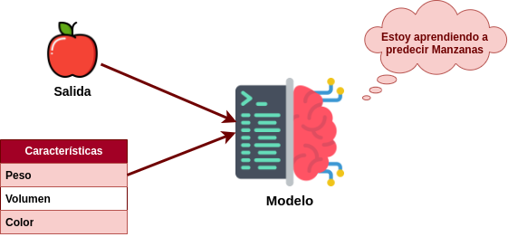

Proyecto de aprendizaje supervisado#
El aprendizaje supervisado es un buen punto de partida para poder comprender todo lo relacionado con el aprendizaje automático. Aquí, la transformación de datos etiquetados en conocimiento valioso se erige como la meta fundamental.
Un proyecto de aprendizaje supervisado consta de varios elementos clave que son fundamentales para su desarrollo y éxito. Estos elementos son:
Conjunto de Datos Etiquetado: Este es el corazón del proyecto. Consiste en un conjunto de ejemplos de entrada (características) junto con sus respectivas salidas etiquetadas. Estos datos son esenciales para entrenar y evaluar el modelo. La calidad y cantidad de datos etiquetados son críticos.
Algoritmos de Aprendizaje: Los algoritmos de aprendizaje supervisado son responsables de aprender patrones a partir de los datos etiquetados. Estos algoritmos pueden ser de regresión (para predecir valores numéricos) o de clasificación (para categorizar datos en clases específicas). La elección del algoritmo adecuado es importante y puede variar según la tarea.
División de Datos: Para evaluar la efectividad del modelo, se dividen los datos etiquetados en conjuntos de entrenamiento, validación y prueba. El conjunto de entrenamiento se utiliza para entrenar el modelo, el conjunto de validación para ajustar hiperparámetros y el conjunto de prueba para evaluar el rendimiento final del modelo.
Preprocesamiento de Datos: Antes de alimentar los datos al modelo, es común realizar preprocesamiento, que puede incluir la normalización, la eliminación de valores atípicos y la codificación de características categóricas. Esto asegura que los datos sean adecuados para el entrenamiento.
Selección de Características: En algunos casos, es necesario seleccionar un subconjunto de características relevantes para la tarea. Esto puede mejorar la eficiencia del modelo y reducir el riesgo de sobreajuste.
Evaluación y Validación: Se utilizan métricas de evaluación, como la precisión, el error cuadrático medio, la sensibilidad y la especificidad, para evaluar el rendimiento del modelo en el conjunto de validación y prueba. La validación cruzada es una técnica común para estimar el rendimiento en conjuntos más pequeños de datos.
Ajuste de Hiperparámetros: Los hiperparámetros son configuraciones ajustables que influyen en el rendimiento del modelo. Se ajustan mediante técnicas como la búsqueda en cuadrícula o la búsqueda aleatoria en el conjunto de validación.
Datos etiquetados#
Ya hemos comentado la importancia de los datos etiquetados, pero vamos a volver a repetirlo:
Datos etiquetados
Los datos etiquetados desempeñan un papel fundamental en los proyectos de aprendizaje supervisado, ya que son la base para entrenar modelos predictivos y clasificatorios. Estos datos consisten en ejemplos de entrada junto con las salidas correspondientes, lo que permite a los algoritmos aprender y generalizar patrones.
A través de la etiquetación, los modelos pueden realizar tareas de clasificación, categorización y regresión. Además, los datos etiquetados facilitan la generalización de modelos a nuevos datos no vistos, lo que es esencial en situaciones del mundo real.

En proyectos de aprendizaje supervisado, la calidad y cantidad de datos etiquetados son cruciales para el rendimiento del modelo. Cuantos más datos de alta calidad se tengan, generalmente, mejor será el rendimiento del modelo. Además, los datos etiquetados se utilizan para evaluar y validar la calidad de los modelos, comparando las predicciones del modelo con las etiquetas reales.
Además de su importancia en el entrenamiento de modelos, los datos etiquetados también pueden ser útiles en la selección de características, ayudando a identificar qué características son más relevantes para la tarea en cuestión, por ejemplo, en campos como la detección de spam, diagnóstico médico, análisis de tendencias, pronósticos económicos y muchas otras áreas.